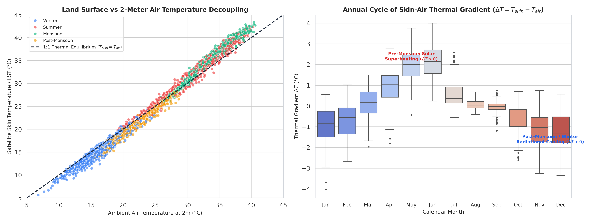
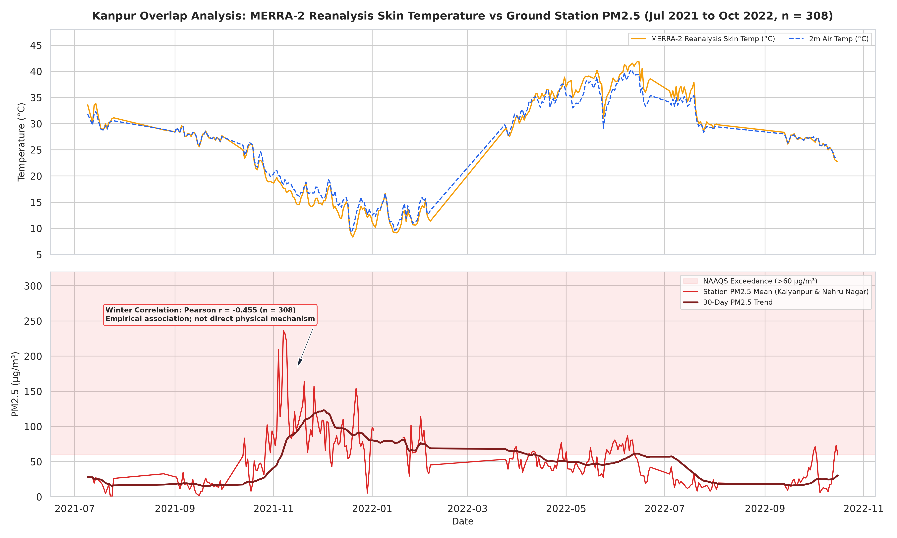

Kanpur Surface Skin Temperature and Atmospheric Coupling

Model Reanalysis vs. Satellite Radiometry
The thermal data used in this investigation is GMAO MERRA-2 numerical model reanalysis from NASA POWER, evaluated across a single 0.5° latitude by 0.625° longitude regional grid cell (~55 x 60 km). It represents modeled skin temperature averaged over the entire grid square, not direct radiometric thermal infrared measurements from high-resolution satellite radiometers (such as Landsat 8/9 TIRS at 30 m or MODIS at 1 km).
Seven-Year Reanalysis Skin Temperature Trajectory
Across 2,556 daily reanalysis records (2017 to 2023), modeled skin temperature ranges from an annual low of 6.8°C during peak winter to 45.4°C during pre-monsoon heat extremes. The annual mean skin temperature is 27.2°C, compared to an annual mean 2-meter air temperature of 25.8°C.
Interactive Thermal Series Explorer
Examine the seasonal difference between skin temperature and 2m air temperature across the 2,556 daily records. Hover over lines to view exact daily model estimates.
kanpur_lst_daily.json (2,556 rows). Flat styling, no animations.
Skin-to-Air Temperature Differences Across Seasons
Computing the daily difference (Skin Temperature minus 2m Air Temperature) reveals clear seasonal behavior. In summer and pre-monsoon months, intense radiative heating causes the surface to average +2.4°C warmer than ambient air. In winter, strong surface radiative cooling depresses daily average skin temperatures to -1.8°C relative to 2m air.

Spatial Grid Box and Urban Context
The spatial footprint of the MERRA-2 grid cell (26.5°N, 80.25°E) spans 0.5 degrees of latitude and 0.625 degrees of longitude. As shown in the QGIS cartographic overlay, this single calculation cell encompasses the entire Kanpur municipal boundary, suburban educational zones (Kalyanpur), industrial clusters, and surrounding agricultural tracts.

Status of Spatial Microclimate Offsets
TODO[ME]: Spatial thermal zoning derivation Fabricated intra-urban temperature offsets have been deleted from this portal. Deriving genuine microclimate gradients requires cloud-masked 30m Landsat 8/9 Level 2 thermal radiance data, paired with in-situ micro-loggers. This GIS analysis is planned and not yet completed.
Temperature and PM2.5 Association in the Overlap Window
Evaluating Kanpur ground-station PM2.5 strictly against reanalysis skin temperature during the true concurrent window (July 9, 2021 to October 16, 2022; n = 308 daily pairs) reveals an empirical negative correlation of Pearson r = -0.455 (p < 0.001). Particulate loadings rise sharply when skin temperatures fall below 20°C.

What This Cannot Show
- This analysis uses coarse model reanalysis (~55 x 60 km) and cannot show street-level thermal gradients, urban park cooling effects, or industrial corridor heat signatures within Kanpur.
- It cannot prove that surface cooling directly caused high particulate concentrations; cooling co-occurs with autumn crop residue burning, increased domestic heating, and decreased boundary-layer height.
- Daily mean differences cannot verify nocturnal thermal inversion strength; that requires vertical sounding radiosonde profiles or hourly nighttime air temperature towers.
Data and Code
The spatial QGIS workflow and reanalysis processing notebooks are open source on GitHub:
Cite This Page
Recommended academic citation format:
Singh, A. (2026). Kanpur Surface Skin Temperature and Atmospheric Coupling. Signal Earth: Public Environmental Data Investigations. https://avnish36singh-arch.github.io/signal-earth-portal/investigations/kanpur-lst.html
Report a Problem
If you spot a spatial calculation error, a reanalysis parameter misstatement, or an unsupported conclusion, please open an issue on GitHub: